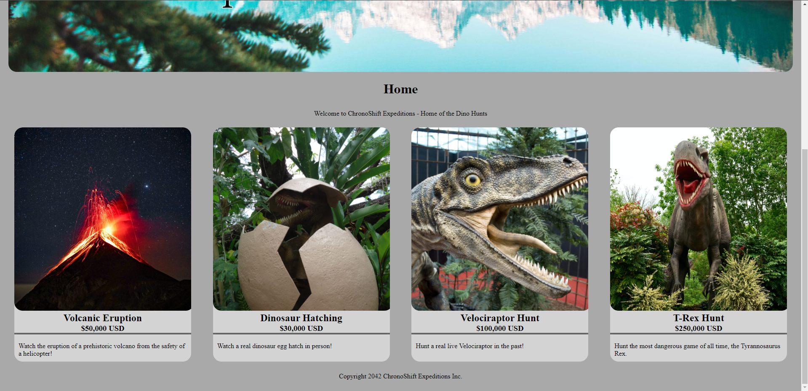
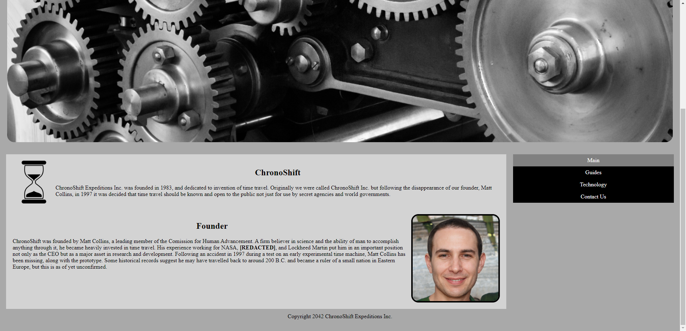
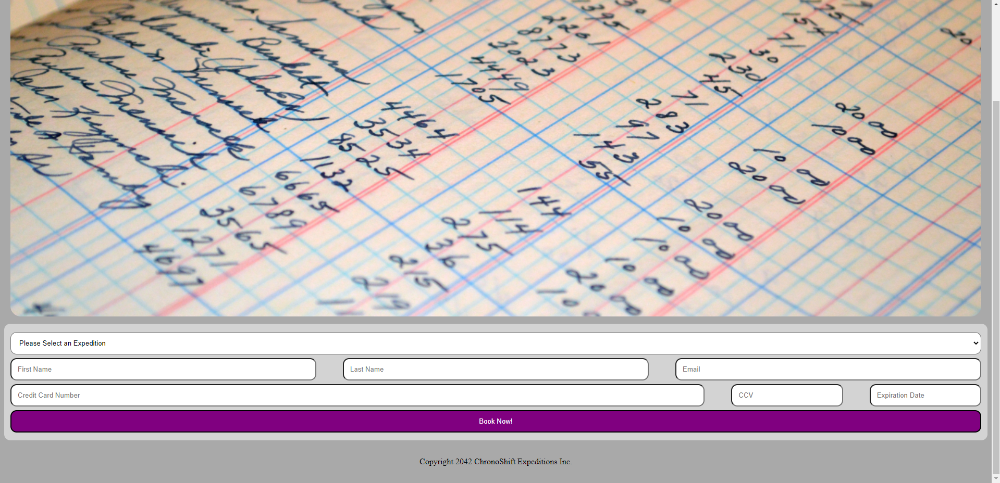

ChronoShift Site
Development
During my time at CART I read a lot of the work of Ray Bradbury, a science fiction author who played a major role in popularizing modern science fiction. After reading the short story, "A Sound of Thunder", we were told to expand on the story and write about one of these time travel agencies that could take people on a trip to the past or future. This led into creating a professional looking website for these fictional agency, which I dubbed "ChronoShift".
As well as being one of the first websites I made in the class to be published, the writing side of the project was quite the challenge for me. I didn't know how to write about fictional concepts in detail, and I kept trying to make things too realistic, which took away from the fantastical nature of the story. In order to get my writing how I wanted it, I worked with my classmates, asked for help from teachers, and had my family help me. With their help I was able to write the way I wanted. This was one of my first published sites so I'm still very proud of it, not just for what I accomplished in it's creation, but also for looking back and seeing just how far I've come. If you want to see what one of my earliest sites looked like, you can view the whole site here.
  